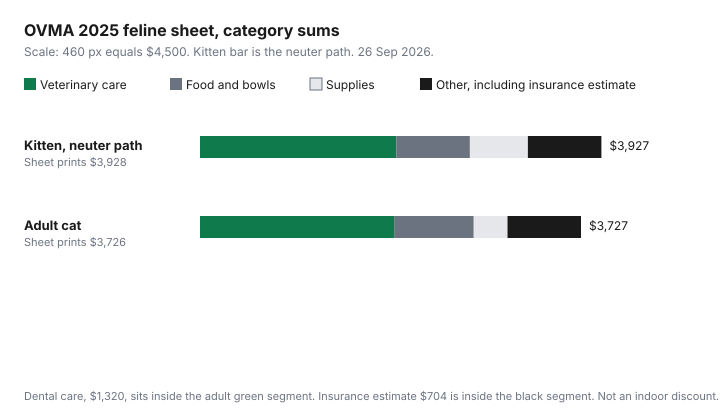

Pets · Canada
What a Cat Really Costs in Canada: Kitten First Year vs Adult Cat Annual Budget
A cat is often filed under “cheaper than a dog,” and then the dental invoice arrives. The Ontario Veterinary Medical Association’s 2025 feline cost-of-care PDF, opened 26 Sep 2026, prints a kitten’s first year at $3,928 or $4,114 and an adult cat at $3,726. Those totals exclude buying or adopting the animal. They are a provincial average, with the same insurance warning as the canine sheet: the premium depends on the pet, the policy, and the coverage you choose. This page splits the lines into ones you can shop and ones that are clinical or municipal. It does not tell you which vaccine to skip. That is your veterinarian’s decision, not a budget trick.
Key takeaways
- Printed totals: kitten $3,928 with the neuter line or $4,114 with the spay line; adult cat $3,726. Line items add to $3,927, $4,113, and $3,727. The one-dollar gaps are shown, not smoothed away.
- Food and litter are the recurring lines you can reprice: kitten food $674 and litter and litter box $308; adult food $773 and litter $258.
- Professional dental care is $1,320 on the adult page, larger than food. Exams with vaccines fall from $642 in the kitten year to $214 for the adult cat.
- The sheet does not split indoor and outdoor cats, and it does not price a sitter. Scratching post $44 and carrier $89 are kitten lines. A senior multiplier is not printed.
- The adult total divided by 12 is $310.50 a month before any fee the PDF left off. The method matches a named sinking fund, not a new app.
OVMA 2025 figures: roughly $3,900–$4,100 for a kitten's first year and about $3,700 a year for an adult cat
The PDF is two pages, a kitten page and a cat page. Both say the costs are a provincial average and that other expenses may arise. The kitten total is printed as $3,928/$4,114. The adult total is printed as $3,726. Adding every printed line gives $3,927 on the neuter path, $4,113 on the spay path, and $3,727 for the adult cat. Use the printed totals when you quote the sheet, and use the line items when you want to see the parts. Do not add a purchase price that is not there. The canine sheet is the dog comparison from the same association and the same year, if the household is choosing. It is not a reason to treat the cat total as optional.
Ontario is the geography of the average. A clinic elsewhere can differ, and this PDF does not print other provinces. The lease can add a cost the veterinary sheet ignores. British Columbia’s pet damage deposit, Ontario’s tenant-fee rules, and Quebec’s ban on a security deposit are on the housing guides: B.C. deposits, Ontario fees, and Quebec. If the lease asks for liability insurance, that is the tenant-insurance guide, not the $704 pet-insurance estimate below.
Food and litter: the two recurring costs you can control
Food is $674 for the kitten, plus bowls at $44. Food is $773 for the adult cat, and bowls are not repeated. Litter and a litter box are $308 on the kitten page. Litter alone is $258 on the adult page. Those four numbers are the controllable core, because you choose the bag and the box on a schedule you can see. Controllable does not mean optional. A cheaper food that the cat will not eat, or a litter that you then replace twice, is not the line on the sheet. Compare food the way you compare any other package: price, weight, and the calorie statement, using the cost-per-day worksheet. Litter has no calorie line. Compare it per kilogram, or per week you actually buy, and write the real week down.
Toys are $50 on both pages. A collar is $22 on both. Those are small beside litter. The trim that matters is the bag and the box you repurchase, not a hunt for a cheaper toy. Store-brand logic from the grocery aisle does not automatically transfer to a cat food. The food guide says when a veterinary diet is the one you keep even if the unit price is higher.
Vet, dental and preventives
Kitten clinical lines are parasite prevention $135, exams with vaccines $642, deworming medication $91, fecal exams $131, microchip $137, and neuter/spay $786 or $972. Adult clinical lines are parasite prevention $131, exams with vaccines $214, wellness profile blood work $174, fecal exams $66, and professional dental care $1,320. The dental line is the reason “cats are cheap” fails. It is larger than adult food. It is not a suggestion to book dentistry you have not discussed. It is the association’s average for professional dental care, and your clinic’s estimate can differ. Ask for that estimate itemized. The vet-bill guide is the script. Medication lines, including parasite prevention, are where a written prescription can be compared with a pharmacy fill. That comparison is the medication guide, and it is Ontario-specific on the legal duty.
Pet insurance is estimated at $704 on both pages. The star says it depends on the pet, the policy, and other coverage choices. It is not a clinical requirement printed as mandatory care. It is a financing choice. The insurance framework uses national premium averages that will not match $704 exactly, because they are a different source and a different mix of plans. Do not add the two insurance figures together. Pick which document you are using. The licence is $15 on both cat pages. Confirm the municipality. The sheet is not your city clerk.
Indoor-cat savings and hidden costs (scratchers, sitters, carriers)
The PDF does not split indoor and outdoor cats, so this page will not claim an indoor cat costs a stated percent less. What it does print, on the kitten page, are the things an indoor cat still needs: a scratching post at $44, a carrier at $89, and the litter lines above. The adult page keeps toys and litter and does not repeat the post or the carrier. A sitter or a boarding stay is not on either page. If you travel, ask for a quote and add it. Calling that a hidden cost is fair. Inventing the quote is not.
An indoor cat can still be the dental average and the food average. The savings people expect from “no outdoor vet crises” are not a line the association itemized. Parasite prevention is $135 for the kitten and $131 for the adult cat on this sheet, without an indoor discount. Follow the clinic’s prevention plan. Do not delete the line because the cat does not go out, unless the veterinarian says the plan changes.
Senior-cat cost curve
There is no third page for a senior cat. The adult total is one number, $3,726 printed, $3,727 if you add the lines. Dental care at $1,320 is the large clinical line inside it. Blood work at $174 is the other adult line that is not on the kitten page. A curve that rises every year after a certain birthday was not printed. The insurance estimate is the same $704 on both pages, not an age band. Industry averages for how premiums move are on the insurance guide, and they are not a cat-age table either. When a renewal prices the cat by age, the number on that renewal is the number. Do not backfill a percent the 2025 feline PDF does not contain.
What you can do with the sheet is notice the shift from first-year surgery and vaccines toward dental and a higher food line. Kitten exams with vaccines are $642. Adult exams with vaccines are $214. The $428 difference is real on the page, and it is not a promise that a senior visit stays at $214. Ask the clinic what it recommends at your cat’s age, then put that quote next to $214 so you can see the gap.
Monthly budget table
The month is the sheet divided by 12, plus a column for whether you can shop the line or whether it is a clinical or municipal charge. Shop does not mean skip. Insurance is marked “choice” because the sheet presents it as an estimate that depends on the policy, not as a vaccine.
| Line | Kitten, year | Adult, year | Adult per month | Controllable or fixed |
|---|---|---|---|---|
| Parasite prevention | $135 | $131 | $10.92 | Clinical plan. The product price can be compared if a prescription can be filled elsewhere. |
| Exams with vaccines | $642 | $214 | $17.83 | Clinical. Not a shelf choice. |
| Deworming | $91 | Not a separate adult line | — | Clinical on the kitten page. |
| Fecal exams | $131 | $66 | $5.50 | Clinical. |
| Microchip | $137 | Not repeated | — | One-time on this sheet. |
| Neuter/spay | $786 / $972 | Not on the adult page | — | One-time. Ask whether adoption already includes it. |
| Wellness blood work | Not on the kitten page | $174 | $14.50 | Clinical. |
| Professional dental care | Not on the kitten page | $1,320 | $110.00 | Clinical. Largest adult line. Ask for an itemized estimate. |
| Food | $674 | $773 | $64.42 | Controllable. Use cost per day. |
| Bowls | $44 | Not repeated | — | Controllable, and one-time on this sheet. |
| Collar | $22 | $22 | $1.83 | Controllable. |
| Bed | $55 | Not repeated | — | Controllable, kitten page only. |
| Toys | $50 | $50 | $4.17 | Controllable. |
| Scratching post | $44 | Not repeated | — | Controllable. Printed for the kitten, not as an indoor discount. |
| Carrier | $89 | Not repeated | — | Controllable, one-time on this sheet. |
| Litter and box / litter | $308 | $258 | $21.50 | Controllable. Adult line is litter, not a second box. |
| Licence | $15 | $15 | $1.25 | Municipal. Confirm the local fee. |
| Pet insurance (estimate) | $704 | $704 | $58.67 | Choice. Depends on the policy. Do not add a second average on top. |
| Sitter or boarding | Not on the sheet | Not on the sheet | — | Quote it. No figure is printed here. |
| Printed total | $3,928 / $4,114 | $3,726 | $310.50 on the printed adult total | Excludes purchase or adoption. |

$3,726 divided by 12 is $310.50. That is the monthly transfer if you are funding the printed adult average and nothing else. The kitten printed totals divided by 12 are $327.33 and $342.83, and the surgery will not arrive in twelve equal pieces. Hold the cash where you hold the rest of the household’s annual bills, using the savings-account guide and a zero-based month. Then write the sitter quote, if you need one, underneath.
Sources & date stamps
- Ontario Veterinary Medical Association, Cost of Care Feline 2025 PDF, opened 26 Sep 2026. Kitten and adult line items and printed totals as in the table. Provincial average. Insurance starred as depending on the pet, the policy, and coverage choices. No purchase price, no indoor/outdoor split, no sitter, no senior age band.
- Line-item addition: kitten $3,927 or $4,113, one dollar under the printed totals. Adult lines $3,727, one dollar over the printed $3,726. Adult month on the printed total: $3,726 ÷ 12 = $310.50.
- No U.S. cost sheet is used. No indoor-cat percent was invented.
Frequently asked questions
How much does a cat cost per year in Canada?
The Ontario Veterinary Medical Association’s 2025 feline sheet, opened 26 Sep 2026, prints $3,726 a year for an adult cat. The lines add to $3,727. The sheet calls this a provincial average and does not include buying or adopting the cat. Professional dental care is $1,320 of that page. A sitter is not included. Add a local quote before you treat $3,726 as your year.
Is a kitten's first year more expensive?
On this PDF, yes. The kitten total is printed at $3,928 or $4,114, against $3,726 for the adult cat. The gap is the first-year surgery at $786 or $972, the microchip at $137, higher vaccine exams at $642, and supplies such as the carrier and the scratching post that the adult page does not repeat. Adult dental care at $1,320 is the line that keeps the later year from collapsing. The one-dollar difference between adding the lines and the printed total does not change that shape.
What are the biggest controllable cat costs?
Food and litter. The adult page prints food at $773 and litter at $258, together $1,031, or $85.92 a month if you divide by 12. The kitten page prints food at $674 and litter plus a box at $308. You can reprice those products. Dental care, exams, and vaccines are larger or stickier, and they are not a shelf choice. A cheaper food still has to be a food your vet is content with if the cat is on a specific diet.
Do indoor cats cost less?
This 2025 sheet does not say. It has no indoor column and no outdoor column. Parasite prevention is $131 for the adult cat with no indoor discount printed. The kitten page does price a scratching post at $44 and a carrier at $89, which indoor cats still use. A sitter is not priced at all. Ask your veterinarian before you delete a prevention line because the cat stays inside.
How much should I budget monthly for a cat?
The printed adult total of $3,726 divided by 12 is $310.50 a month. That funds the Ontario average, including the $704 insurance estimate and the $1,320 dental line, spread out. It does not fund a purchase fee or a sitter. Kitten totals divided by 12 are $327.33 and $342.83, and the spay or neuter will not be polite about the calendar. Confirm the care plan with your clinic. The average is a funding target, not a treatment plan.